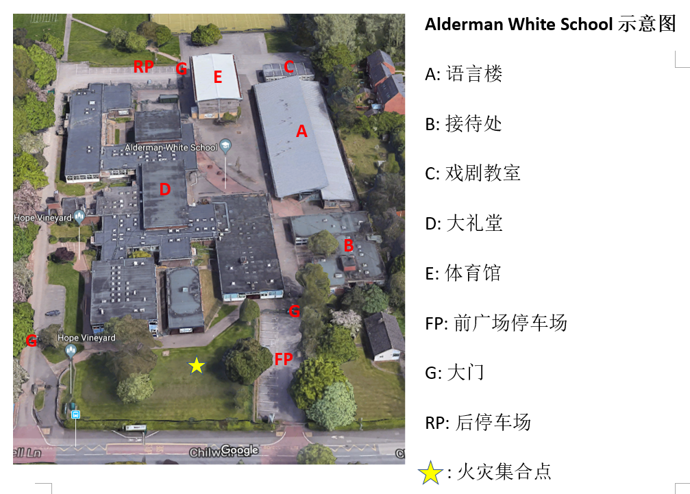

|
Nottingham Chinese School |
| |
Nottingham Chinese School |
诺丁汉中文学校成立于1999年。在2020-2021学年度，全校共开设了17个班级，总计300多名学生。 诺丁汉中文学校的教学基于专门为海外学生设计的教科书《中文》，适合4.5-18岁的孩子学习汉语。教学内容涵盖了从小小班初学者直至GCSE和A-Level汉语级别水平。
学校每周六下午从12:15到14:15或14:30到16:30开设语言课。兴趣班（例如舞蹈，绘画，乐器，书法等）的时间为13:30至14:30，或14:30至15:30。
诺丁汉中文学校位于Alderman White School， Chilwell Lane，Bramcote，NG9 3DU，诺丁汉。
2007年诺丁汉州郡视察报告摘录:
"... 课程安排得井井有条，学生专注并积极参与...课堂纪律好，家长和管理委员会也大力支持学校的活动。 这是一所经营良好的学校，追求创新，持续改进 ..."
1999年2月，郑庆平博士提出创建中文学校的想法，之后在张克非博士和王义博士以及CSSA-NOTT成员的共同支持努力下， 学校于1999年3月21日正式成立，由学校委员会管理。从此，中文学校迈上了稳步发展的道路。
| 校长 | 孙雪中博士 |
| 秘书 | 刘浩教授 |
| 财务 | 徐老师 |
| 副校长 | 李力, 屈嵘 |
| 校长助理 | 李营 |
| 咨询委员 | 王义博士 |
| 委员 | 吴雨鹏, 李明, 李伟斌，张靖 |
| IT 技术支持 | 叶丽 |
诺丁汉中文学校开设各种兴趣班课程，包括中国书法，绘画，舞蹈，朗诵和乐器（琵琶）。兴趣班时间为13:15〜14:15或14：30〜15：30。 如果您想了解更多有关兴趣班的详细信息，请与学校联系。
学校平面图如下:
| 兴趣班 | 老师 | 课程时间 | 上课地点 |
|---|---|---|---|
| 舞蹈班 | S. Dong (董) | 13:30pm ~ 14:30pm | 戏剧教室 |
| 乐器班 | S. Zhang (张) | 14:30pm ~ 16:30pm | 语言楼 |
| 书法班 | Y. Li (李) | 13:15pm ~ 14:15pm | 语言楼 |
| 国画班 | F. Lee (李) | 13:15pm ~ 14:15pm or 14:30pm ~ 15:30pm | 图书馆 |
语言课的教学范围包括初级小小班直至A-level.
| 班级 | 老师 | 课程时间 | 教室 |
|---|---|---|---|
| 小小班 1 | T. Zhang (张) | 12:15pm ~ 14:15pm | 语言楼 |
| 小小班 2 | T. Zhang (张) | 14:30pm ~ 16:30pm | 语言楼 |
| 1a班 | Y. Deng (邓) | 12:15pm ~ 14:15pm | 语言楼 |
| 1b班 | Y. Deng (邓) | 14:30pm ~ 16:30pm | 语言楼 |
| 1c班 | Y. Li (李) | 12:15pm ~ 14:15pm | 语言楼 |
| 2a班 | Q. Shi (史) | 12:15pm ~ 14:15pm | 语言楼 |
| 2b班 | Y. Li (李) | 14:30pm ~ 16:30pm | 语言楼 |
| 3a班 | G. Wang (王) | 12:15pm ~ 14:15pm | 语言楼 |
| 3b班 | Y. Minnican (潘) | 14:30pm ~ 16:30pm | 语言楼 |
| 4a班 | S. Guo (郭) | 12:15pm ~ 14:15pm | 语言楼 |
| 4b班 | L. Ye (叶) | 14:30pm ~ 16:30pm | 语言楼 |
| 5a班 | J. Liao (廖) | 12:15pm ~ 14:15pm | 语言楼 |
| 5b班 | S. Dong (董) | 14:30pm ~ 16:30pm | 语言楼 |
| 6班 | C. Jiang (蒋) | 14:30pm ~ 16:30pm | 语言楼 |
| 7班 | Y. Chen (陈) | 14:30pm ~ 16:30pm | 语言楼 |
| 8班 / GCSE班 | J. Tang (唐) | 13:30pm ~ 16:30pm | 语言楼 |
| 9班 / A-level班 | S. Brealey (常) | 14:30pm ~ 16:30pm | 语言楼 |
|
|
|
|
|
|
|
|
|
|